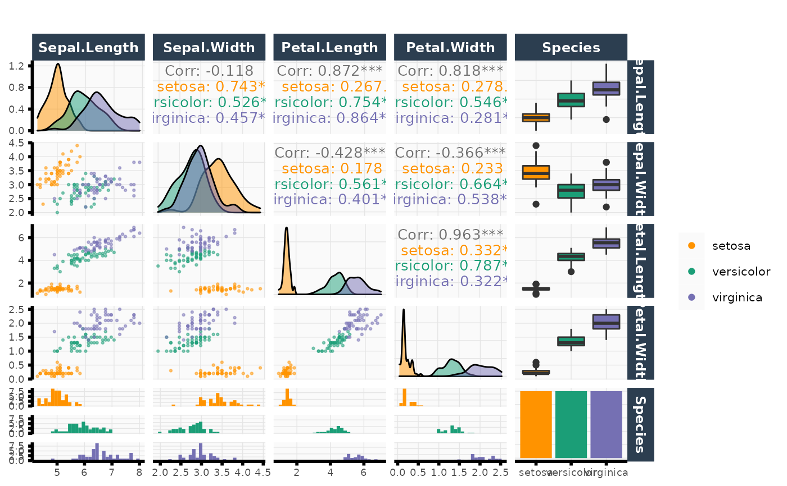

plot_pairs.RdPlots pretty pair plots using a custom ggplot theme and provides additional functionality beyond [GGally::ggpairs()] such as the ability to add two different color schemes (one for the lower triangular subpanels and another for the upper triangular subpanels).
plot_pairs(
data,
columns,
color = NULL,
color_upper = NULL,
color_label = "",
color_upper_label = "",
color_scheme = NULL,
color_scheme_upper = NULL,
column_labels = NULL,
title = "",
point_size = 0.5,
point_alpha = 0.5,
cor_text_size = 3.5,
subsample = 1,
show_upper = TRUE,
drop = FALSE,
theme_function = NULL,
show_plot = FALSE,
...
)Data frame to use for plot.
Vector of column indicies or column names to plot.
(Optional) Data vector to use as colors for lower ggplot panels.
(Optional) Data vector to use as colors for upper ggplot panels.
Character string. Label for color legend title (used in lower ggplot panels).
Character string for color_upper legend title (used in upper ggplot panels).
(Optional) Vector of colors to set manual color
scheme corresponding to color_lower argument (i.e., the color scheme in the
lower panels). If NULL (default), viridis color scheme is used.
(Optional) Vector of colors to set manual color
scheme corresponding to color_upper argument (i.e., the color scheme in the
upper panels). If NULL (default), viridis color scheme is used.
Label names to be displayed on strips.
Character string. Title of plot.
Point size for [ggplot2::geom_point()].
Alpha value for [ggplot2::geom_point()].
Size of correlation text.
Proportion of rows to subsample and plot.
Logical. Should we show subplots in upper panels?
Logical. Whether or not to drop factors with no observations.
function which adds theme() to ggpairs() object. If
NULL, add vthemes::theme_vmodern() to
[GGally::ggpairs()] object.
Logical. Should this plot be printed? Default FALSE.
Other arguments to pass to vthemes::theme_vmodern()
or theme_function()
A [GGally::ggpairs] object.
plot_pairs(data = iris, columns = 1:ncol(iris), color = iris$Species)
#> Registered S3 method overwritten by 'GGally':
#> method from
#> +.gg ggplot2
#> `stat_bin()` using `bins = 30`. Pick better value with `binwidth`.
#> `stat_bin()` using `bins = 30`. Pick better value with `binwidth`.
#> `stat_bin()` using `bins = 30`. Pick better value with `binwidth`.
#> `stat_bin()` using `bins = 30`. Pick better value with `binwidth`.
